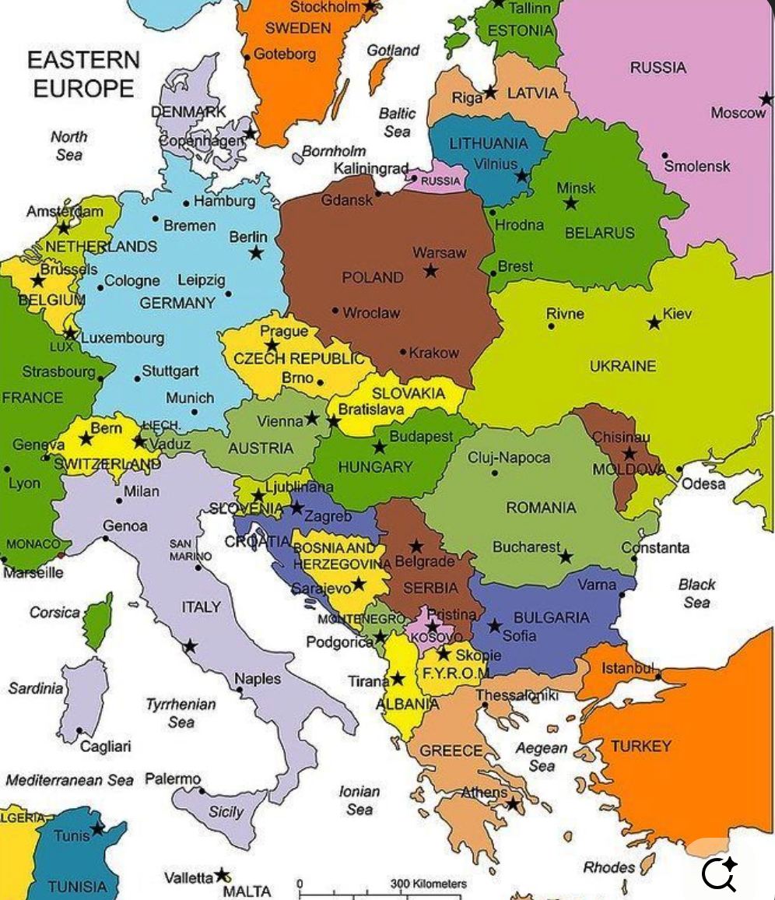

According to historian Larry Wolff, the concept of Eastern Europe was invented by Western European intellectuals during the Enlightenment in the eighteenth century, particularly in the second half of the 1700s.
His central argument appears in his influential book Inventing Eastern Europe: The Map of Civilization on the Mind of the Enlightenment (1994).
Who invented the concept?
It was not invented by one individual. Wolff identifies a network of Western European philosophers, travelers, writers, and intellectuals, including:
Voltaire – portrayed Russia and Eastern Europe through the lens of Western European ideas about civilization and progress.
Denis Diderot – helped shape Enlightenment perceptions of Russia and its place in Europe.
Why was it invented?
Wolff argues that Western European intellectuals constructed the idea of Eastern Europe as a way of defining their own identity and superiority.
The emerging division established a hierarchy:
Western Europe: civilized, modern, rational, progressive, and developed.
Eastern Europe: backward, semi-civilized, exotic, traditional, and less developed.
Importantly, Eastern Europe was not simply excluded from Europe. It was placed in an intermediate position: geographically European but supposedly lagging behind Western Europe in its level of civilization.
